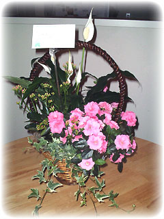

| ..*..*.. 2003年5月26日(月) 晴れ ..*..*.. 昨日はお誕生日でした。夫のご両親から今年もお花を贈っていただきました。土に植わっているスパシフィラムとアザレアとカランコエとアイビーの寄せ植えです。いただいたとき(23日)には、カランコエがまだつぼみだったのですが、少しずつ咲き始める感じがいいです。 ちょうどバスケットの寄せ植えを買いたいと思ってあちこち探しているところだったので、ほんとに嬉しいです(^^)。ありがとうございました。 +-+-+-+-+ さて、昨日は久しぶりにサンフランシスコへ行ってきました。こちらは5月26日がメモリアルデー(5月の第4月曜日)で、うちの会社は今年に入って初めての(!)祝日で3連休でした。普段は休日は家でゆっくりするか、近場へ出るのが好きなのですが、久しぶりの小旅行(と言ってもここから1時間くらいですが)を楽しんできました。（と、大げさな書き方をしていますが、うちの会社はサンフランシスコから通って来てる人もたくさんいます(^^;） ここらへんからサンフランシスコへ行くには101か280という道路を通るのですが、280の方が景色がよくきれいです。 280からサンフランシスコの6th Streetの出口で降り、Mission Streetを通って車を停めました。昨日はミニで行ったので、路上駐車とかして車に傷つけられたりするのが嫌なので、駐車場探しは念入りです。 ベイブリッジの見える海沿いのレストランでワインを飲みながら、バースデーランチを食べました。ヨットとか船が見えて素敵でした。昨日は乗りませんでしたが、フェリーも出ています。 それからちょっと散歩して、サンフランシスコ内をドライブ。
ここは観光地としてはあまり見どころはないと思うのですが、普通にドライブするにはいいところじゃないかな。昨日は景色は見られなかったけど、鳥がたくさんいておもしろかったです。霧で暗いし、車から外に出ると寒いのですが、水着で泳いでいる人もいたりしてびっくりしました。
|